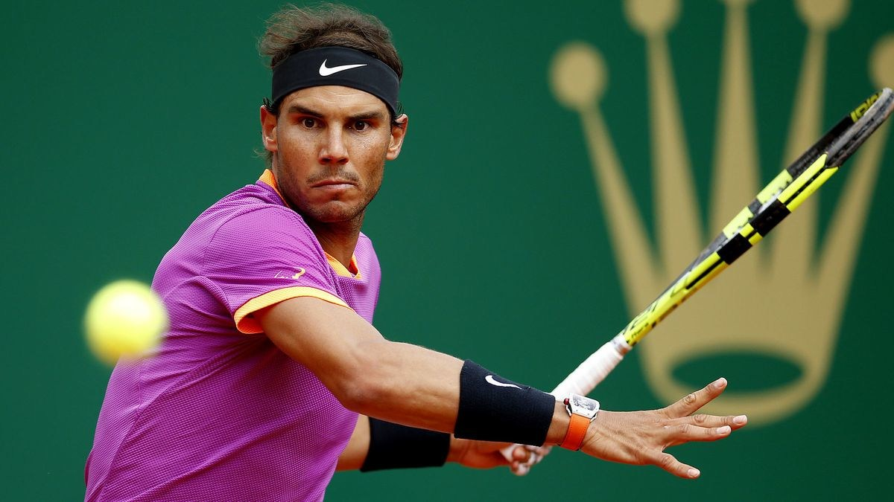
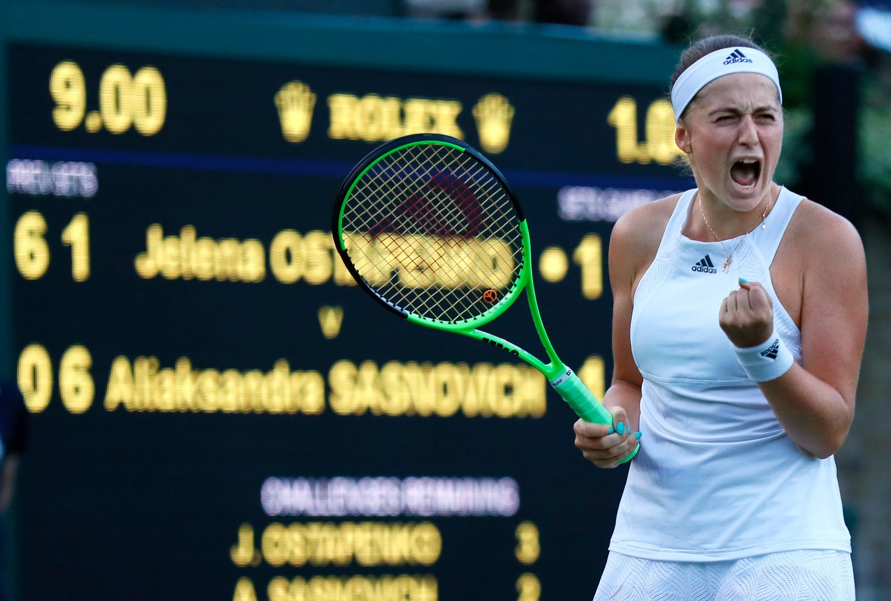
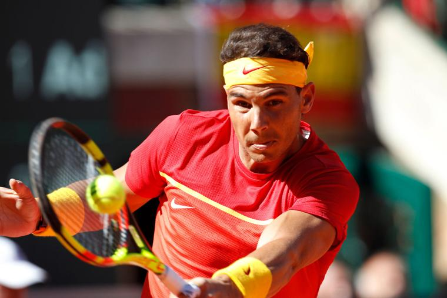

Top 5 Best Shots: Rolex Monte-Carlo Masters 2018 Day 3
April 18, 2017
welcome to Saturday at the Masters. Patrick Reed shined on Day 2, setting the pace after 36 holes with rounds of 69-66, including a nine-birdie round on Friday that puts him two shots ahead of Marc Leishman to start the day. This is the second time Reed has held the 36-hole lead at a major, as he also was the co-leader at the 2015 U.S. Open at Chambers Bay. He shot a third-round 76 and finished T-14.
Speaking of shining, there won't be much sunshine on Saturday at Augusta National. The forecast calls for rain pretty much all day in Augusta—with heavy stuff projected starting from 1 p.m. What does that mean? Golf journalists will pretend to be meteorologists all morning long. Oh joy! We'll stick to the golf here and get you ready for the action.

Rafael Nadal wins unprecedented 10th Monte Carlo Masters title
April 23, 2017
As the first men's tennis player in the Open era to win the same title 10 times, Rafael Nadal showed Sunday he's likely the best ever on clay after easily beating Albert Ramos-Vinolas 6-1, 6-3 in an all-Spanish final at the Monte Carlo Masters.
It was Nadal's 50th career title on his favored surface, moving him one clear of Argentine Guillermo Vilas. The next big challenge for Nadal will be winning a 10th French Open title. The last of his 14 Grand Slams was three years ago in Roland Garros.
"I want," Nadal said after Sunday's game, a smile breaking across his face. "I really want it too."
Tsitsipas Living The Dream In Monte-Carlo 2018
April 23, 2017
Tournament Director Craig Tiley confirmed today that every assistance would be provided to the former champion in order for her to compete at the event where she has achieved her greatest success.
“Vika’s current situation is obviously very difficult for her and we have reached out to offer any support we can.
“As a two-time Australian Open champion we’ve awarded her a wildcard and look forward to seeing her back on court in Melbourne in January.”
Azarenka is looking forward to returning to Melbourne and the Australian Open where she has hoisted the trophy twice.

Jelena Ostapenko’s Fans Don’t Cheer for Jelena. They Cheer for Alona.
April 23, 2017
WIMBLEDON, England — When the 2017 French Open champion travels internationally, she carries a passport that says Jelena Ostapenko. The same name is listed on the WTA rankings. “J. Ostapenko” was engraved on the Coupe Suzanne Lenglen after her victory at Roland Garros last month.
But during her quarterfinal match in Paris, one Latvian fan tried to start chants of “Al-Yo-Na,” which were met with perplexed silence by the crowd.
Ostapenko, 20, made a name for herself by winning the French Open title — it just happened to be a name different from what those close to her use.
“I call her Alona,” the Latvian player Ernests Gulbis said. “As far as I know, everybody in Latvia, they call her Alona.”
The double identity can cause confusion both at home and abroad.
“Almost no one knows that I’m Alona — in Latvia, almost everyone knows it — but here, in WTA, they don’t know it,” said Ostapenko, who is in the fourth round at Wimbledon for the first time and will play Elina Svitolina on Monday.

Nadal wary of saying he's fully recovered from thigh injury
April 23, 2017
FILE - In this Sunday April 8, 2018 file photo, Spain's Rafael Nadal returns the ball to Germany's Alexander Zverev during a World Group quarterfinal Davis Cup tennis match between Spain and Germany at the bullring in Valencia, Spain. Rafael Nadal is wary of saying he’s fully recovered from a troublesome right thigh injury as he defends his Monte Carlo Masters title. The top-ranked Spaniard only recently returned to action at the Davis Cup, after a recurrence of the injury forced him out of the Mexico Open and then Masters tournaments at Indian Wells and Miami last month. (AP Photo/Alberto Saiz, File)